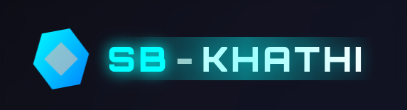
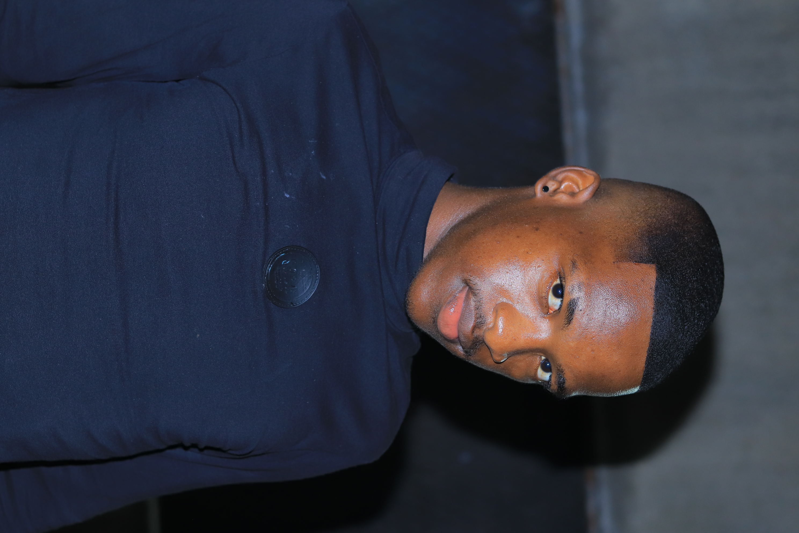

Hi, I’m Samukelo Khathi, a beginner developer currently learning Web Development from scratch at
CodeTribe
Academy.
I’m
excited to build my skills step by step, starting with the basics of web development and growing into more
advanced projects over time.
I enjoy practical, hands-on learning and I’m curious about exploring ethical hacking in the future, as I love
understanding how systems work
and how to make them more secure.
For now, my focus is on building a strong foundation in frontend development, while keeping an open mind
to
new
challenges and opportunities along the way.